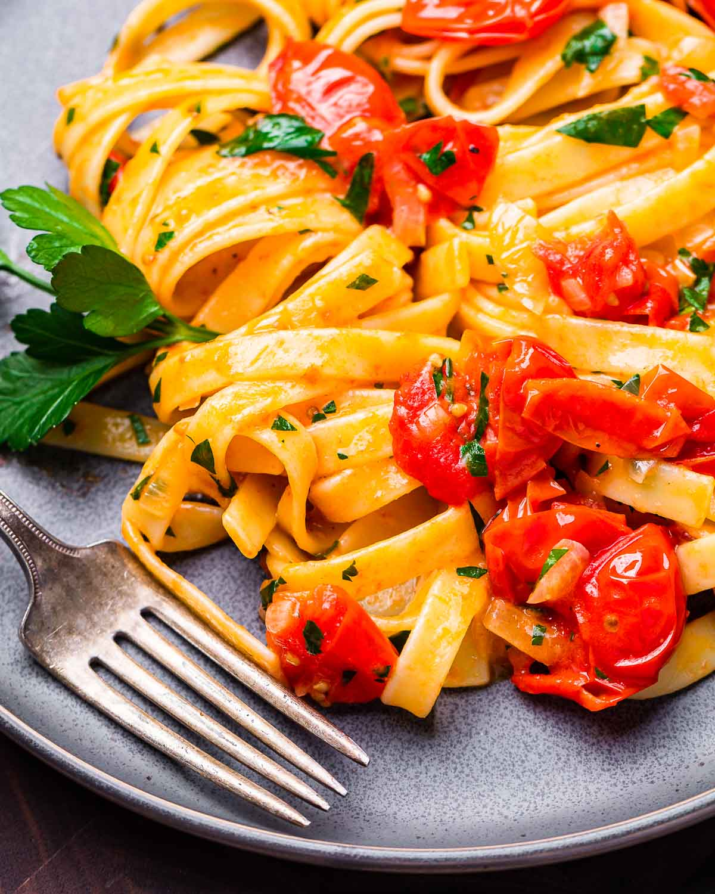

simple tomato penne

about these noods
cook smarter, not harder. a simple, tasty noods recipe that can be easily crafted in under 30 minutes. no excuses this time around.
what you need to craft these noods
- olive oil (extra virgin, as usual)
- onion, finely diced
- red chili flakes
- clove of garlic, minced
- crushed tomatoes (san marzano, as usual)
- salt, to taste
- bronze-cut penne noods